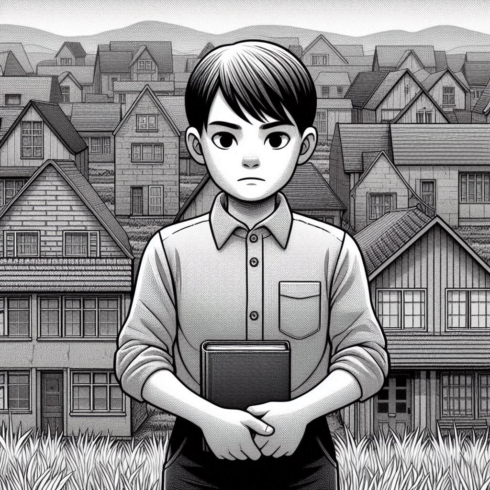

작가:로이스 로이
출판일: 1993년
감상평:
늘 같음 상태로 유지되는 세상에서 잃어버린 것들을 되찾는 소년의 이야기. 책을 통해 선택의 기회와 그에 따른 책임이 있다는 것이 얼마나 소중하고 용기 있는 일인지 느낄 수 있었다. 장애물을 마주하지 않고 사는 것은 매력적인 삶일 수 있겠지만 나의 삶이라고 말할 수 없는 무채색의 삶을 살고 싶지는 않다고 생각했다. 앞으로 역경을 자주 마주하겠지만 놓지 않고 삶의 의의를 되새겨 무채색의 삶을 바라지 않는 모습이 되었으면 한다.
감상평에 대한 그림: 
감상평에 대한 AI 감정 평가:
이 감상문은 선택과 책임의 소중함을 깨닫고, 무채색의 삶이 아닌 자신만의 의미 있는 삶을 살고자 하는 다짐을 담고 있습니다. 장애물이 없는 삶이 매력적으로 보일 수 있지만, 스스로 선택하고 성장하는 과정이 더 중요하다고 느낍니다. 앞으로 역경을 마주하더라도 삶의 의의를 잊지 않고 나아가겠다는 의지가 강하게 드러납니다.